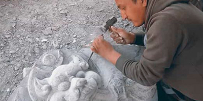
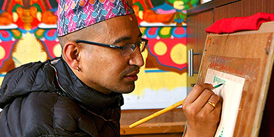

Background: With a mastery of stone carving, this artist creates sculptures that capture texture, form, and heritage. Every piece reflects skill, patience, and a deep connection to the natural elegance of stone.
Background: With mastery over metal, this artist crafts sculptures that combine strength, elegance, and intricate detail. Each work celebrates both artistic vision and the enduring qualities of the material.
Background: This stone craft artist brings life to raw stone through delicate carving and creative vision. Their work combines cultural heritage with artistic precision, producing sculptures that are both timeless and captivating.
Background: This metal craft artist shapes raw metal into striking sculptures and functional art. Each creation reflects precision, skill, and a blend of tradition and modern design, showcasing the enduring beauty of metal craftsmanship.
Background: Specializing in stone, this artist shapes each piece with precision and care. Their work balances intricate detail with bold expression, turning raw stone into sculptures that honor both tradition and artistic innovation.
Background: An engraving artist skillfully carves or etches designs onto metal, wood, or stone, creating detailed artworks, personalized items, or decorative patterns, blending precision, creativity, and traditional craftsmanship into each piece.

Background: Ujay Bajracharya, born in 1981 is a samgha member of Mayurvarna Mahavihara, Bhinchhe Baha:, Lalitpur. He is a traditional Nepalese Paubha artist and the Paubha Faculty Head at Aksheswar Traditional Buddhist Art College. He has exhibited his Paubha in two solo shows and has participated in over three-dozen national and international exhibitions in India, China, Bhutan, Thailand, Bangladesh, Japan, and United States of America. He received the 'Best Artist of the Year 2017' award from the Honorable President of Nepal, Bidhya Devi Bhandari, and has also won various national awards. He has presented lectures about paubha at several universities and institutions of Nepal, India, and United States of America. His articles about Paubha have also appeared in major publications in Nepal and China.